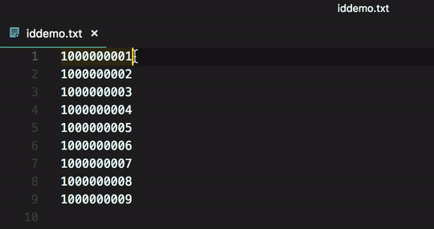

最近有个项目，需要将一些用户数据导入到数据库中，有4000w+行之多…
现在要做的，是将一行行1000000001这样的ID，转成对应的INSERT INTO tbUser (id) VALUES ('1000000001');这样的SQL语句，处理的方式有很多种，我们一个个来 ⬇️⬇️⬇️
多行游标
Sublime、VS Code等编辑器都有多行游标的功能，使用起来非常方便。

但如果文件行数在千万级，就尴尬了——光打开就已非常吃力，还想多行同时操作？现实是，在内存16G的电脑上，多行游标根本「游」不起来！
sed
作为Linux常用的文本处理命令之一，sed很适合这样的使用场景。
sed "s/.*/INSERT INTO tbUser (id) VALUES ('&');/" id.txt > id1.txt |
其中，s表示替换，/.*/表示匹配除了回车换行等外的所有字符——这里就是整行文本，/INSERT INTO tbUser (id) VALUES ('&');/表示将匹配的文本进行相应的替换，里面的&表示匹配的文本。
awk
说了sed，awk怎么能不提。同样是Linux常用的文本处理命令，awk处理起来也不在话下。
awk '{print "INSERT INTO tbUser (id) VALUES ('\''"$0"'\'');"}' id.txt > id2.txt |
awk语句被'{ }'包起来，里面的$0表示整行文本。
Python
人生苦短，我用Python.
作为最常用的脚本语言之一，Python写起来也很OK.
import os |
with语句可以自动关闭打开的文件句柄，形式比传统的try/finally更加简洁。os.linesep表示行终止符，在Windows上是\r\n，在macOS上是\r，在Linux上是\n.
总结
这三种方法处理起来都很快——读写4000w+行，不到1分钟，也就泡杯茶的工夫。
在实际工作中，怎么顺手怎么来就好了。